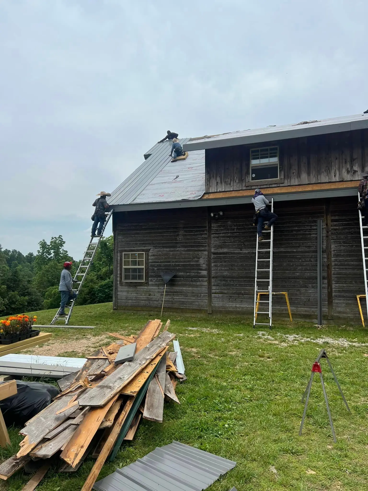

JJ & Son's Roofing and Construction • August 13, 2026 · August 13, 2026
In Bismarck, AR, the Ouachita foothills climate hits roofs from multiple directions at once — spring hail bruises shingles, summer UV bakes them, and winter freeze-thaw cycles stress the flashing and adhesive strips. That combination means a roof here can age 10 to 15 percent faster than the manufacturer's rated lifespan. Knowing that upfront helps you judge whether a repair will actually buy you time or just delay an inevitable replacement.
How Do You Know If You Need a Full Replacement Instead of a Repair?
A full replacement becomes the right call when damage is widespread, the roof is near or past its rated lifespan, or repair costs would exceed about half of what a new roof costs.
Start by looking in your gutters. Heavy granule buildup means the shingles have lost their UV-protective layer — once that happens, the underlying asphalt oxidizes quickly and no patch will reverse it. Bald patches on the shingles themselves confirm the same problem.
Walk around and look at the roofline from ground level. Visible waves or dips point to rot in the decking underneath, and no surface repair fixes a compromised deck. If you are also seeing leaks appearing in new spots after each storm, that is a sign of systemic failure, not isolated damage.
Standard 3-tab shingles last 15 to 20 years; architectural shingles last 25 to 30 years. Because central Arkansas UV and humidity accelerate aging, shave a few years off those numbers. If your roof is within five years of its expected end, putting repair money into it rarely makes financial sense.
For a closer look at what a full project involves, see residential roofing services in Bismarck — understanding the scope helps you compare estimates accurately.
Does Arkansas Weather Make Roof Damage Worse Over Time?
Yes — Bismarck sits in a zone where hail, high humidity, intense UV, and episodic ice storms each attack a different part of the roofing system, so damage compounds faster than in more moderate climates.
Spring hail (peak season April through June) causes granule loss and mat bruising that may not leak immediately but shortens the remaining lifespan by years. Class 4 impact-rated architectural shingles are designed to resist this — their reinforced mat stays intact where standard shingles crack. They may also qualify for a homeowner's insurance discount in Arkansas, which partially offsets the higher upfront cost.
Bismarck winters bring a different threat. Temperatures dip below freezing roughly 40 to 50 nights per year, but the real damage comes from repeated freeze-thaw cycles, not sustained cold. Water gets under flashing or into small cracks, freezes, expands, and widens the gap. After several cycles, what started as a hairline separation becomes a real leak path. Ice-and-water shield installed at the eaves during replacement directly addresses this mechanism.
Year-round humidity averaging 70 to 75 percent promotes algae and moss growth that accelerates shingle aging from below. Algae-resistant shingles — which use copper or zinc granules — slow this process and are a practical choice for most Bismarck homes.
Choosing the Right Shingle Material for Central Arkansas
Architectural (dimensional) asphalt shingles with a Class 4 impact rating offer the best combination of performance and value for most Bismarck homeowners — better wind uplift than 3-tab, hail resistance, and wide availability from local suppliers.
If budget allows and you plan to stay in the home long-term, standing-seam metal roofing handles hail well, sheds ice efficiently, and carries a 40 to 70 year lifespan. It also performs well against central Arkansas UV without oxidizing the way asphalt does. The higher upfront cost spreads over a much longer service period.
Avoid standard 3-tab shingles for any new installation in Bismarck. Their minimal wind and hail resistance makes them a poor match for Hot Springs County conditions, and their shorter lifespan means you will be back at this decision sooner.
What Should You Expect During a Bismarck-Area Roof Replacement?
Most residential replacements on homes between 1,500 and 2,500 square feet take one to two days in good weather. More complex roofs with multiple valleys, steep pitches, or dormers run two to four days.
Fall — specifically September and October — is the ideal scheduling window in central Arkansas. Post-summer storm season is over, temperatures are comfortable enough for adhesive strips to seal properly, and contractor backlogs are shorter than the spring rush. If you have damage from a spring or summer storm, getting on a contractor's schedule early matters because waitlists in Hot Springs County can stretch four to six weeks after a major storm event.
If damage is sudden — a hail event, a tornado, or a downed tree — temporary tarping within 24 to 48 hours stops the damage from cascading into your attic and living space. Delayed response turns a roofing problem into interior damage from roof leaks that requires drywall and structural repairs on top of the roofing work.
Replacing the roof is also the right time to assess your gutters. Gutters that are already aging will be stressed further by ice and debris from the new installation, and the scaffolding or staging already in place means adding gutters at the same time costs less than a separate mobilization.
What to Ask a Contractor Before Hiring
The answers to a few direct questions separate qualified local contractors from post-storm crews that move on after payday.
Ask whether the contractor is licensed through the Arkansas Contractors Licensing Board and whether they carry both general liability and workers' compensation insurance. An uninsured crew working on your roof leaves you exposed to injury liability. Ask for a written, itemized estimate that specifies the exact materials — shingle brand, class rating, underlayment, drip edge, and ice-and-water shield at eaves.
Confirm they will do a full tear-off rather than roofing over existing layers. Arkansas allows a maximum of two shingle layers, but tear-off is preferable because it lets the crew inspect and replace any rotted decking before new shingles go down. Also ask whether they will handle insurance claim paperwork and be present for the adjuster visit — a contractor who can document damage thoroughly helps prevent underpaid claims.
One firm legal note: any offer to waive your deductible is illegal in Arkansas under Ark. Code § 23-79-208. If a contractor suggests it, walk away.
Understanding the repair-versus-replacement decision before you talk to a contractor puts you in a much stronger position to evaluate what you are being told and why.
Explore your options with JJ & Son's Roofing and Construction and Schedule a free roof inspection to get a clear picture of your roof's actual condition.
Call (501) 467-4496 Get a free estimate

“They are prompt, very dependable, and do excellent work.”Tom M.